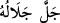
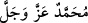

”, “__WORD__ ve benzeri sözlerle Allâh’a övüp senâ etmek vâcibdir. Çünkü her
zaman ve her mekanda Allâh’a tâzim gereklidir. Ancak kişi bunu terk etse kazâ etmez.
Hz. Peygamber (s.a.)’e salevât ise böyle değildir. Çünkü Allâh’ın övülmesini gerektiren
Allâh’ın kişiye verdiği nîmetlerin yenilenmesinin ardı arkası kesilmez. Onun için kişi
daha önce terk ettiği senâ ve övgü için vakit bulamaz. Hz. Peygamber (s.a.)’e salevât
getirmek ise böyle değildir. Zamanında ve yerinde yapılmayan salevât zimmette borç
olarak kalır ve kazâ edilir. Çünkü her vakit salevâtın edâsı için uygun bir mahaldir.
Kâdîhân’da şöyle denilmiştir: “Kur’an okuyan bir kişi aynı zamanda Hz. Peygamber
(s.a.)’in adını işitse, onun salât ve selam getirmesi vâcib olmaz. Çünkü nazm ve te’lif
üzere, yâni tertip ve tertil ile Kur’an okumak Hz. Peygamber (s.a.)’e salevât getirmekten
üstündür. Kur’an okumayı bitirdikten sonra bu kişi salevât getirirse güzel olur.
Getirmezse kendisine bir şey lazım gelmez.”
Namazda son teşehhüdde salevât getirmek, daha önce geçtiği üzere Ebû Hanîfe ve
İmam Mâlik’e göre sünnet, İmam Şâfiî’ye göre ise namazın câiz olması için şarttır.
İmam Ahmed b. Hanbel’e göre ise rukündür. Bu durumda İmam Şâfiî ve Ahmed b.
Hanbel’e göre kasden veya sehven salevât terk edilse namaz bâtıl olur. Çünkü Hz.
Peygamber (a.s.) “Namazında bana salevât getirmeyenin namazı yoktur.”[298]
buyurmuştur. Biz Hanefîler bu hadisin, namazda salevât getirilmezse namazın kemal
üzere olmayacağına hamledildiğini söyleriz. Eğer namazda salevât getirmek farz
olsaydı, Hz. Peygamber (s.a.) namazın rukünlerini öğrettiği bedeviye salevâtı da
öğretirdi.
Peygamberlerden başkasına salevât getirmek, mesela “__WORD__(Allâh’ım Muhammed’e ve O’nun âilesine salât eyle)” denilmek sûretiyle Rasûlullah
(s.a.)’e tâbi kılınarak yapıldığında câiz olur. Müstakil olarak ve ilk başta peygamberden
başkasına salevât getirmek tenzîhen mekruhtur. Çoğu fukahânın sahih olarak kabul ettiği
görüş de budur. Şu halde mesela “__WORD__ (Allâh’ım Ebû Bekir’e salât et)”
denilmez. Çünkü kendisi için böyle salevât getirmek, örfte peygamberlerin şiârıdır.
Buna göre Hz. Peygamber (s.a.) aziz ve celil (şerefli ve yüce) olduğu halde “__WORD__” (Muhammed aziz ve celil olandır/olsun) demek de mekruhtur. Bir de böyle söylemek,
Râfizî olmakla itham edilmeye sebep olur. Çünkü bu, bid‘at ehlinin şiârıdır. Onların
şiarları ise bize yasaklanmıştır. Bir hadîste: “Kim Allâh’a ve âhiret gününe îman
ediyorsa, töhmet yerlerinde durmasın.”[299] buyrulmuştur.
Selam kelimesi, salât mânâsında gâib (hazırda bulunmayan, üçüncü şahıs) hakkında
kullanılmaz. Peygamberlerden başkasına tek olarak kullanılmaz. Mesela Râfızîler’in
söylediği ve yazdığı gibi Ali (aleyhi’s-selâm) denilmez. Bu hususta diriler ve ölüler
eşittir. Hazırda olan kimseye “es-Selamü aleyke” veya “es-Selâmü aleyküm”, “Selâmün
aleyke” veya “Selâmün aleyküm” diye hitab edilir. Bu üzerinde icmâ edilen bir
husustur. Kabristana varıldığında ölülere selam vermek, hâzırda bulunan dirilere selam